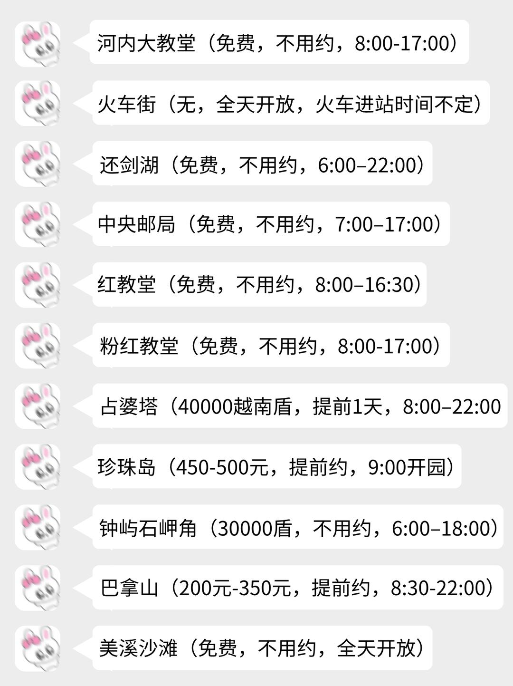
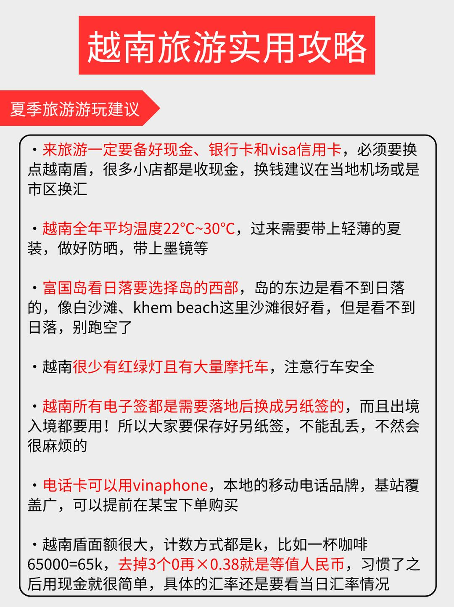
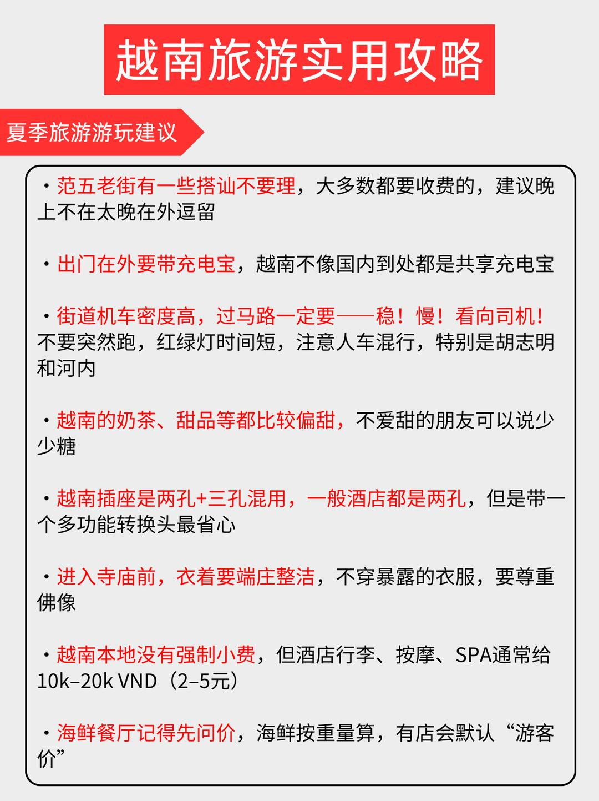
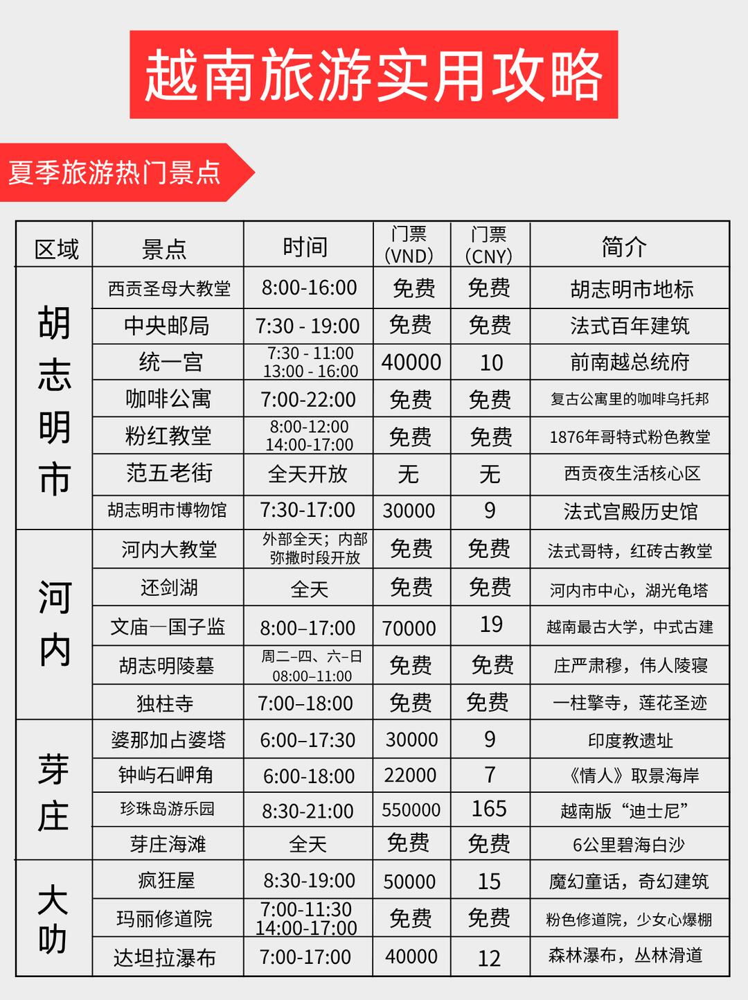
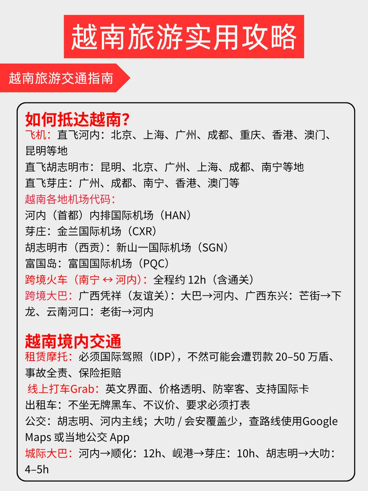
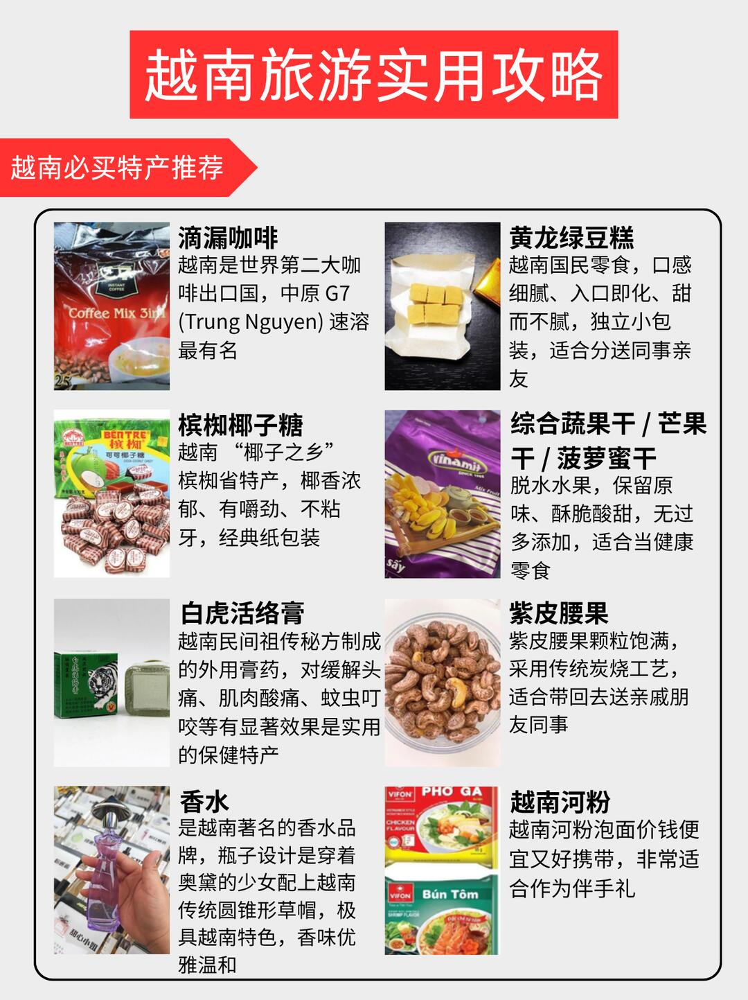
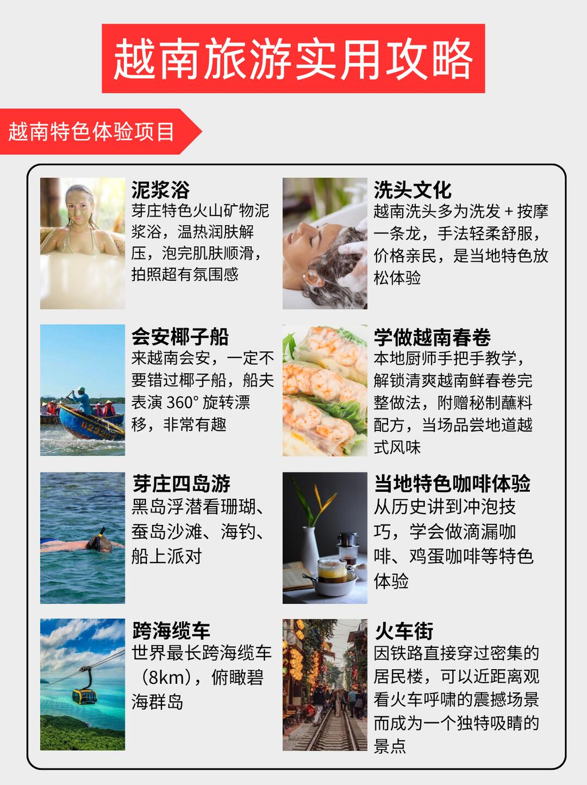
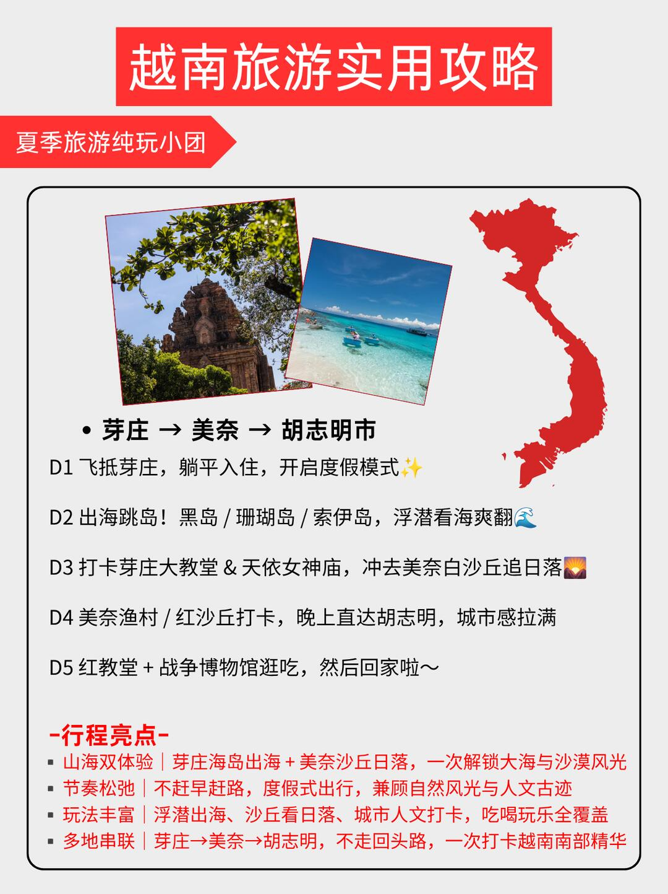

注意事項筆記 · 來自 Obsidian · 2026-08-17 擷取
越南会惩罚每一个不提前予约的P人

大家好，我是越南中文导游阿胜🙋
越南的美景和美食真的会惩罚每一个不做计划的P人😢
真的整理了一份保姆级越南攻略，求求大家去之前看看，少走弯路，不被坑
- 📍 河内：火车街、三十六行古街、还剑湖、巴亭广场等
- 📍 胡志明：中央邮局、新定教堂、邮局、咖啡公寓、胡志明美术馆、范五老街等
- 📍 芽庄：芽庄大教堂、婆那加占婆塔、钟屿石岬角、珍珠岛游乐园
- 📍 美奈：白沙丘、红沙丘、美奈渔村、仙女溪
- 📍 富国岛：日落小镇、日落沙滩、珍珠乐园、富国大世界
- 🔥 河粉（Phở）：越南国民美食，汤头清甜，搭配嫩牛肉或鸡肉，佐以香菜、青柠和辣椒，风味独特。
- 🔥 春卷（Gỏi cuốn）：米纸包裹鲜虾、猪肉、蔬菜和米粉，蘸鱼露酱汁，清爽可口。
- 🔥 法棍三明治（Bánh mì）：殖民文化融合的经典，脆皮法棍夹腌肉、黄瓜、香菜和辣椒，口感丰富。
- 🔥 越南咖啡（Cà phê sữa đá）：浓郁滴漏咖啡加炼乳，冰镇后醇香甜美，是消暑必备
- D1 飞抵芽庄，躺平入住，开启度假模式✨
- D2 出海跳岛！黑岛 / 珊瑚岛 / 索伊岛，浮潜看海爽翻🌊
- D3 打卡芽庄大教堂 & 天依女神庙，冲去美奈白沙丘追日落🌄
- D4 美奈渔村 / 红沙丘打卡，晚上直达胡志明，城市感拉满
- D5 红教堂 + 战争博物馆逛吃，随后返程
河內大教堂：免費、不用約、08:00–17:00｜占婆塔：40,000đ、提前 1 天預約等——各景點是否免費/需預約一目了然。
- 貨幣：需換越南盾，建議機場或市區換
- 氣溫：全年平均 22–30℃，帶輕薄夏裝＋防曬
- 富國島看日落：選西部，東邊看不到
- 交通：少紅綠燈、多摩托車，過馬路要小心
- 電子簽：落地換紙簽，出境入境都用
- 電話卡：用 vinaphone（某寶預訂）
- 越南盾計數：以 k 為單位（65000 = 65k，換人民幣去掉三個 0 × 0.38）
- 范五老街：搭訕不要理、晚間不遲留
- 帶充電寶；過馬路小心（機車密度高、紅綠燈短、人車混行）
- 飲食偏甜可減糖；插座兩孔＋三孔混用需轉換頭
- 進寺廟著裝端莊不暴露；酒店小費 10k–20k VND
- 海鮮餐廳：先問價、按重量算、有「遊客價」要留意
胡志明（西貢聖母大教堂、中央郵局、統一宮、咖啡公寓、粉紅教堂、范五老街、博物館）／河內（大教堂、還劍湖、文廟、胡志明陵墓、獨柱寺）／芽莊（占婆塔、鐘嶼石岬角、珍珠島、海灘）／大叻（瘋狂屋、瑪麗修道院、達坦拉瀑布）——含開放時間與門票價格。
滴漏咖啡（中原 G7）、黃龍綠豆糕、檳榔椰子糖、綜合蔬果乾/芒果乾/菠蘿蜜乾、白虎活絡膏、紫皮腰果、越南香水（奧黛瓶身）、越南河粉泡麵——送禮自用兩相宜。
泥漿浴（芽庄火山礦物泥漿浴）、洗頭文化（洗髮＋按摩一條龍）、會安椰子船（360 旋轉漂移）、學做越南春卷、芽莊四島遊（黑島浮潛/蠶島/海釣/船上派對）、滴漏咖啡/雞蛋咖啡體驗、跨海纜車（世界最長 8km）、火車街（鐵路穿過居民樓）。
芽莊→美奈→胡志明，不走回頭路：山海雙體驗（海島出海＋沙丘日落）、節奏鬆弛、浮潛/沙丘/城市人文全覆蓋。
去越南前先看這篇！行前換越南盾＋vinaphone 卡＋電子簽落地換紙簽；富國島看日落選西部；范五老街搭訕不要理、晚間不遲留；海鮮先問價防遊客價；部分景點（如占婆塔）提前預約——不做計畫真的會被懲罰！😆
📸 實拍（共 8 張）







📌 資料來源：內容與全部 8 張照片來自小紅書實地帖文（Pebble 擷取至 Obsidian，2026-08-17）。
出發前建議以現場或官方最新資訊為準。